Mappa
Cryptid Quest is a location-aware game where players explore the real world hunting creatures never proven to exist. We designed its UI and the first three days of onboarding, then tested it and found out the part we were proudest of wasn't the problem.
THE OUTCOME
We spent three weeks making a tutorial that respects the player, then tested it and found out players were never confused by the teaching. They were confused about why they were hunting cryptids at all. The fix was story, not instruction.
The revised tutorial, running. The first clip is the intro we rewrote after testing. The three after it are one day of onboarding each.
HOW WE GOT THERE
We were confident about the tutorial right up until we watched people use it.
THE BRIEF
A location-aware game about hunting creatures that may not exist, and no tutorial yet.
Mappa is a mobile-first metaverse platform that gamifies the globe through location-aware social gaming. The founders brought our team on ahead of their go-to-market launch to design the UI and tutorial for their flagship game, Cryptid Quest: players explore the real world to find creatures never proven to exist.
Our task
Solidify game UI for mobile and desktop, and establish flows and interactions for the first three days of gameplay.
Priorities for UI
Information architecture, and an in-game tutorial that respects the player's intelligence.
That second priority is the whole project in one line. Every game has a tutorial. Most of them are resented. The brief wasn't to build one, it was to build one players wouldn't want to skip, while still letting them skip it.
01 DISCOVER
Two competitors had already solved problems we would otherwise have solved again.
Competitive and comparative analysis, heuristic evaluations, user interviews and affinity mapping. Two competitors did most of the work for us.
Mappa gave us several competitors to look at; Superworld, a virtual real estate platform mapped over the globe, was the most relevant. Its map is the part of a location-aware game people touch constantly, so the conventions it had already settled, like a plain search bar, pinch-pan-zoom and tapping into an area for detail, were conventions we had no reason to reinvent.
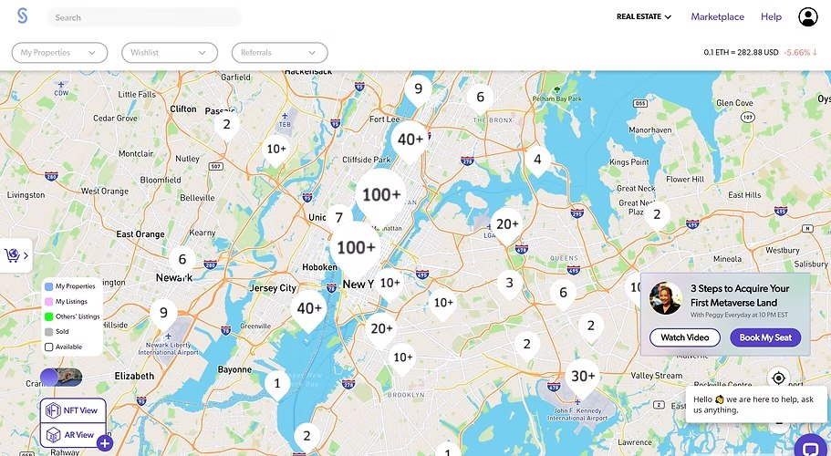
For onboarding we studied Pokémon GO, because it does something rare well: it teaches just enough to get players invested without overwhelming them. We pulled out five elements.
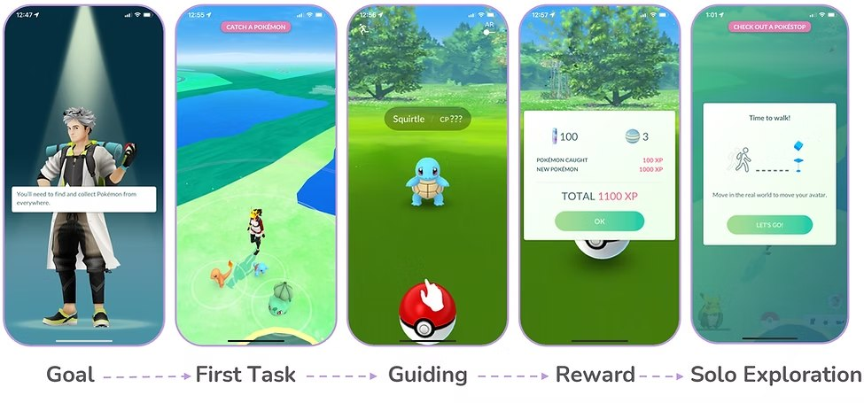
Ages 20 to 43. Four women, ten men, one non-binary participant. Four themes came out.
One group plays to escape and relax, often while doing something else. The other plays for the people, the excitement and the lore.
Minimal and skippable, but still interesting enough that people choose to stay in them.
Enough different things to do, and a fair trade between how hard something is and how often it gets finished.
People want visible forward motion, and something to overcome on the way there.
Minimal and skippable, but engaging enough to stay invested. Those pull in opposite directions, and holding both is the actual design problem.
THE TENSION THE WHOLE TUTORIAL HAD TO RESOLVE02 THE PLAYERS
Brian wants the tutorial gone. Gil wants it gentle. You cannot average them.
Two proto-personas, grounded in the interviews and in Quantic Foundry's research on gamer motivations. They exist to represent the two camps, and to stop us designing for an average player who doesn't exist.
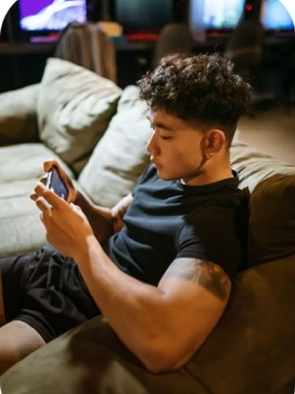
Brian and Gil want opposite things from a tutorial. Brian wants it gone. Gil wants it gentle. Designing for one breaks the other. That is why skip controls and non-invasive prompts stopped being nice-to-haves and became the mechanism.
Teach the game without making anyone sit through it.
Give every control one obvious home.
Make forward motion visible from the first minutes.
Players need a fast, low-friction way to learn Cryptid Quest so they can start making progress, have fun with friends, and settle into immersive gameplay, without feeling talked down to.
THE PROBLEM STATEMENTWe were designing inside real constraints: a web-based game with an existing style guide, and a client who wanted simple, clean UI. Our research added a requirement the brief hadn't: the game needed a story strong enough to hold attention from the first screen. That turned out to be the finding that mattered most.
03 THE TUTORIAL
A tutorial has to teach, comfort, excite and respect all at once. Miss one and people quit.
Before designing anything I wanted the approach grounded in both our research and established practice. A tutorial has to do four things at once: teach the game, comfort the player, excite them about what's ahead, and respect their intelligence. Miss any one and players disengage.
Miss any one of them and players disengage
Mappa asked us to structure onboarding around the first three days of play. We ran a design studio and sketched flows against all four principles.
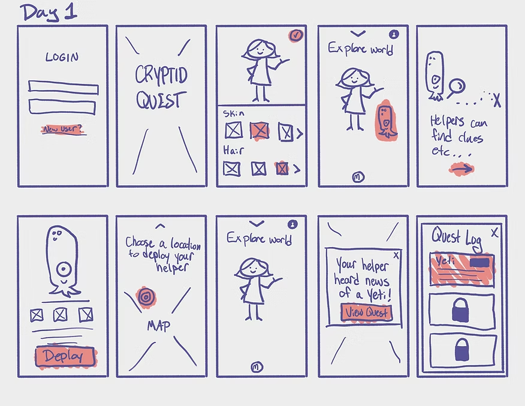
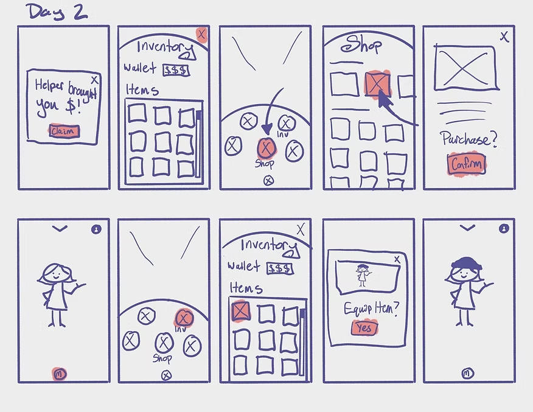
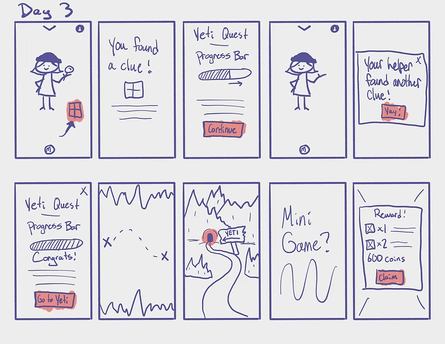
The storyboard that came out of that studio became the experience we built and tested.
04 ARCHITECTURE
We thought we knew where things belonged. Forty-one people told us whether we were right.
We had a sense of best practice from the research, but a sense isn't validation. We ran a hybrid open/closed card sort with 41 participants to find out how players would naturally group game features and controls.
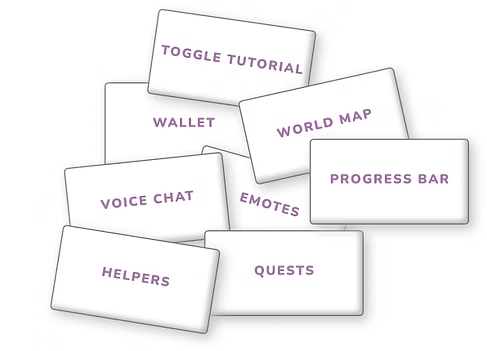
The results largely confirmed our assumptions, which is a useful outcome, not a wasted study. It meant we could design against evidence rather than instinct, and it settled three homes for everything in the game.
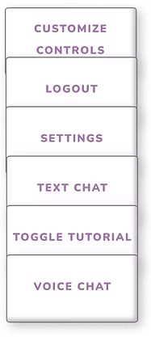
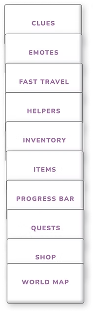
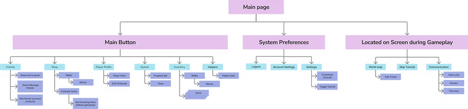
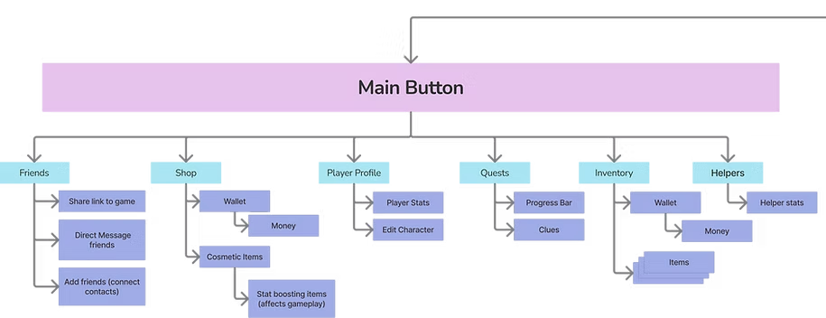
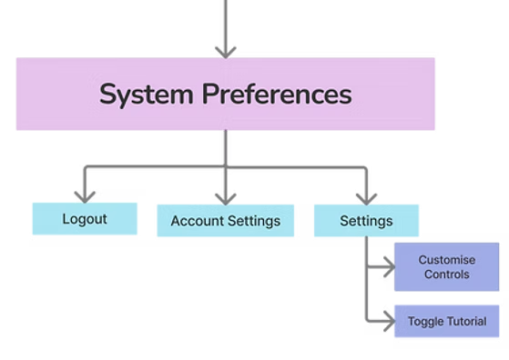
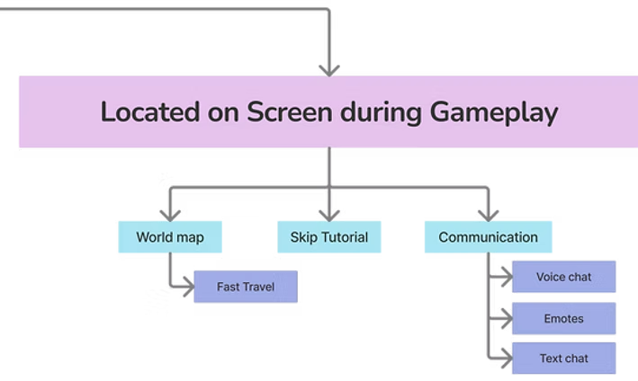
Note where toggle tutorial sits: in preferences and on the HUD. Players told us they wanted tutorials skippable; putting the escape hatch only in a settings menu would have been a way of saying yes while meaning no.
05 TESTING
The teaching was fine. Players just had no idea why they were hunting cryptids.
Mappa is mobile-first, so we designed and tested mobile before adapting to desktop. The mid-fidelity wireframes cover Day 1 through Day 3: street view, main menu, tutorial screens, helper profile.
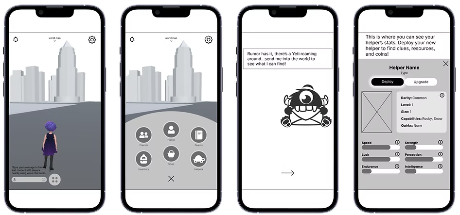
Ten participants walked the full three days, with tasks broken out by day.
Account creation, the tutorial walkthrough, and finding your way around the menu, the map and a quest.
Logging back in, collecting loot, visiting the shop and checking what you are carrying.
Finding a chest, collecting items and finishing the quest you started on day one.
We collected three kinds of data: quantitative error rates, qualitative emotional response, and a System Usability Score with written feedback.
How did tasks actually end?
10 PARTICIPANTS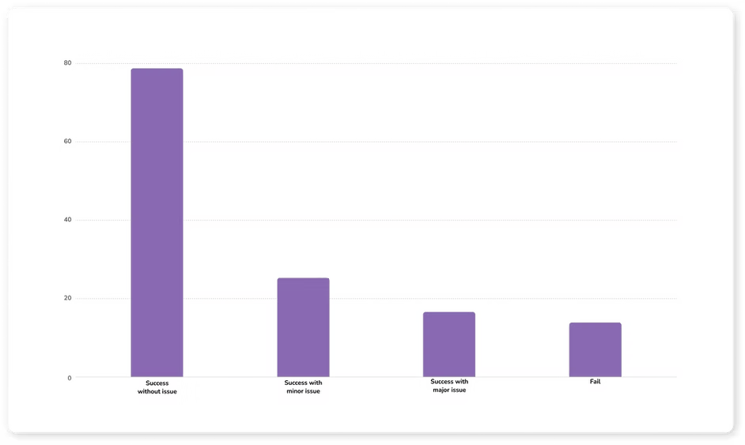
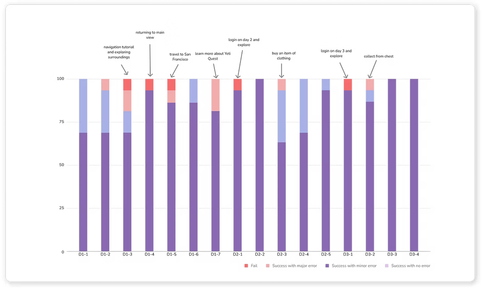
Breaking success down by task rather than reporting one average is what made the results actionable. An 8% error rate tells you nothing about what to fix. The per-task view named the specific screens that were failing.
A System Usability Score of 66 is below average. Players could navigate and complete tasks. They just weren't enjoying it as much as we'd assumed.
THE NUMBER WE DIDN'T WANT, AND THE MOST USEFUL ONE WE GOTDone well
Easy to use
Quick to learn
Needs improvement
Unclear on the game's goal and story
Bottom of screen is cluttered
Tutorial flexibility
Easy to use and quick to learn, but unclear on the point of it all. We had built a tutorial that successfully taught the mechanics of a game players didn't understand the purpose of. That's the finding the whole second half of the project turned on.
06 WHAT CHANGED
Five fixes, and the biggest one was writing a better opening rather than a better tooltip.
Players were confused about why they were hunting cryptids. We reworked the intro to establish the objective and emotional tone far earlier, making sure five things land before play begins: what cryptids are, why they need finding, why clues appear in everyday places, how to find them, and who your helper is.
All of it front-loaded into short, skippable screens. Get it out of the way fast, so players start oriented and excited rather than confused.
Testing showed the crowded bottom of the screen was making the main menu, the most frequently needed control in the game, hard to find. We cleared the bar and prioritized the menu button, then moved the communication features we'd displaced into a new hub in the top left: voice chat, messaging, emotes and notifications in one place.
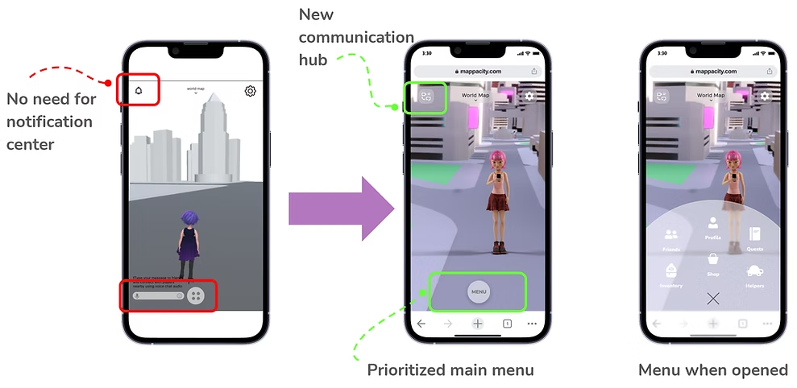
On desktop, a single button at the bottom made less sense than a persistent sidebar down the left edge, using the wider screen without stealing attention from the game world. Players can keep it open or collapsed.
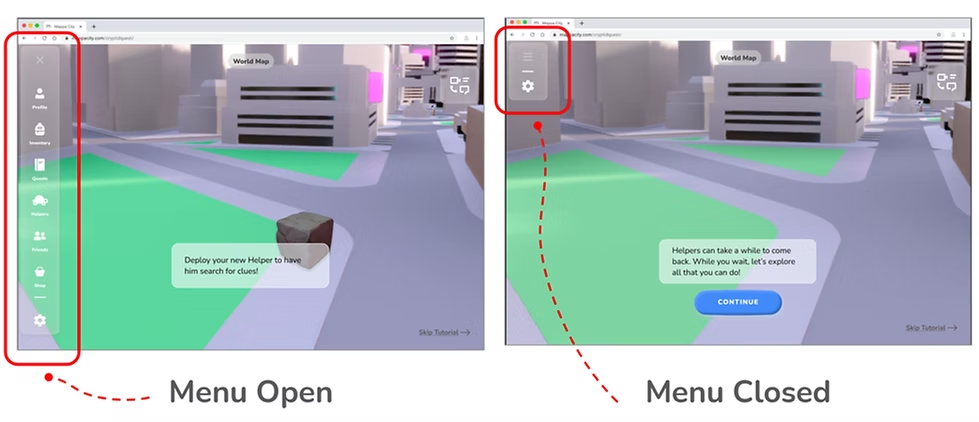
The communication hub grew from a text bar at the bottom of the screen into something that works mid-game. Incoming messages appear as a quick-reply overlay inside the game world; clicking through shows recent conversation history without leaving play.
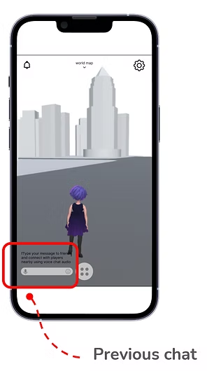
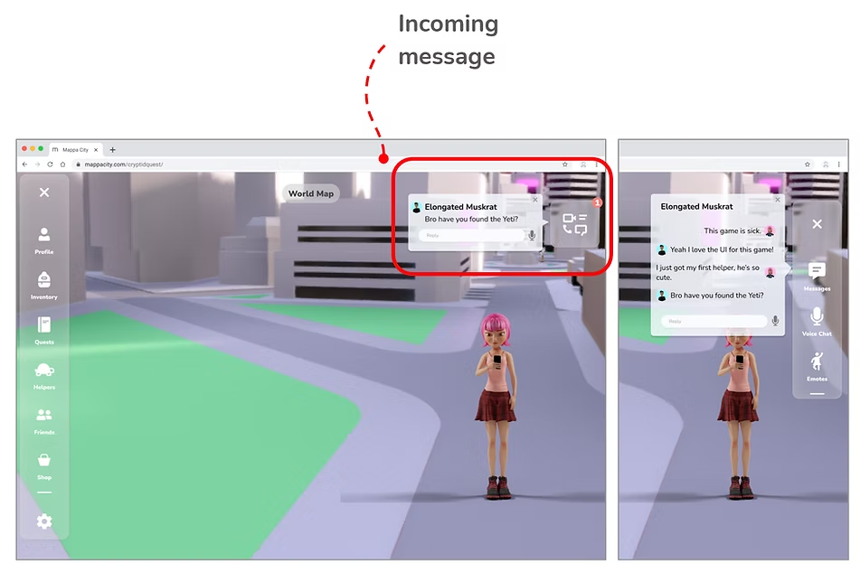
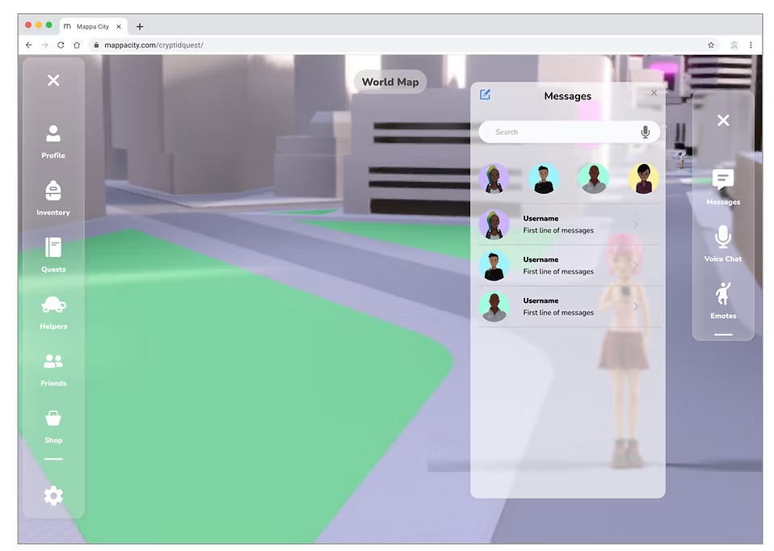
With the story fixed, the mechanics themselves. The principle: teach what's needed without making anyone feel babysat. We used small, non-invasive guiding gestures rather than pop-up instruction walls. Brian can ignore them entirely and Gil gets just enough support. We also added skip buttons and back arrows throughout so players control their own pace.
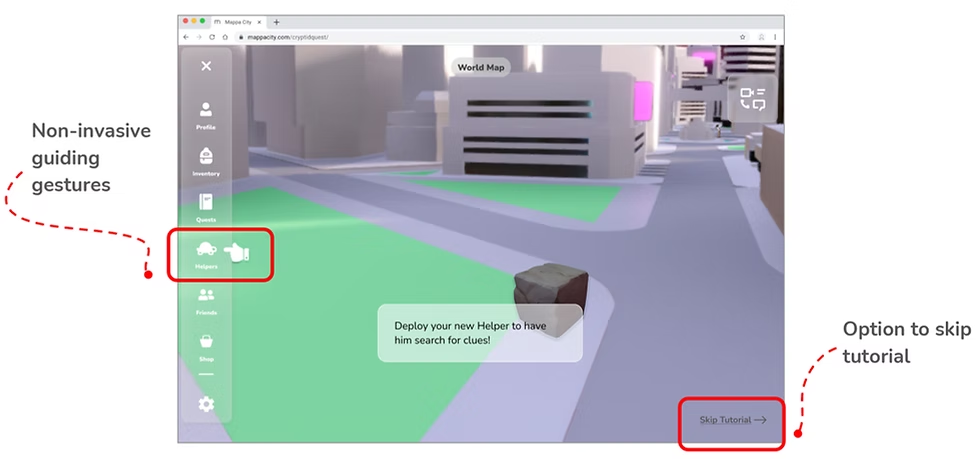
LOOKING BACK
The most valuable thing we learned was the thing we got wrong. We spent our energy on tutorial mechanics: teaching people how to tap, where to find the menu, how helpers work. Testing showed the mechanics landed. What hadn't landed was why any of it mattered. Players could operate Cryptid Quest perfectly while having no idea what they were doing in it.
A middling SUS score was more useful than a good one. 66 out of 100 forced a real diagnosis. If it had come back at 85 we'd have shipped a game that taught its controls beautifully and left players cold, and we wouldn't have known until launch.
Designing for two opposed personas produced better mechanics than designing for one. Brian wanted the tutorial gone; Gil wanted it gentle. Neither could be served by tuning the tutorial's length. Both were served by giving the player the controls, skip and back and toggle, and making the guidance quiet enough to ignore. The conflict is what pushed us past a compromise into a mechanism.
What I'd do differently: test the story before testing the interface. We validated the information architecture with 41 people and never once asked whether the premise made sense. That question would have cost an afternoon.